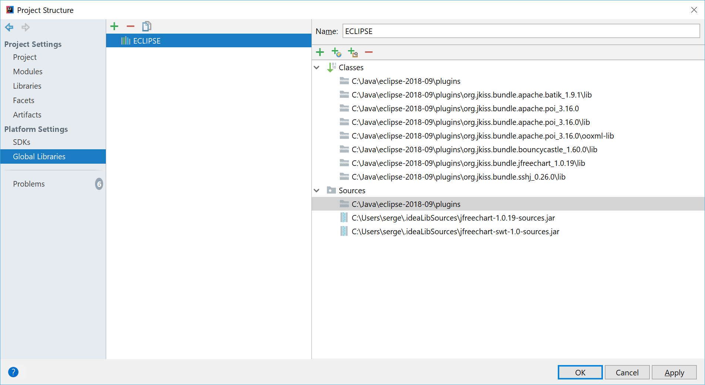
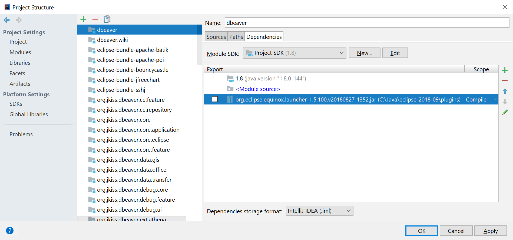
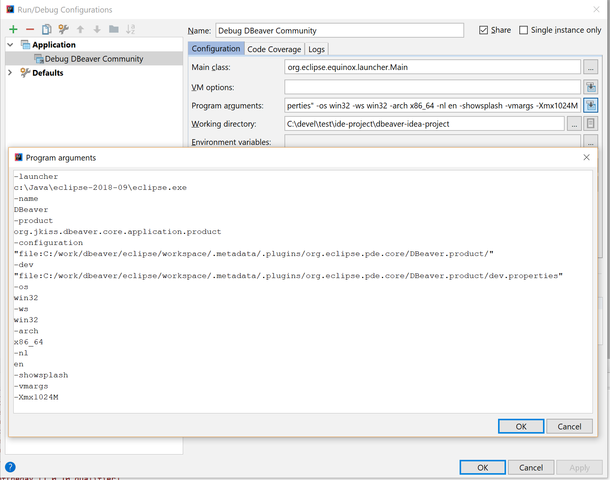

Develop and debug DBeaver in IntelliJ IDEA
Well, that's a tricky part.
Intro
Why
DBeaver is based on [[Eclipse Platform|https://projects.eclipse.org/projects/eclipse.platform]] and it seems logical to develop it in [[Eclipse IDE|https://www.eclipse.org/downloads]].
However, many people find that even latest Eclipse Java IDE isn't that good and convenient as [[IntelliJ IDEA|https://www.jetbrains.com/idea/download/]].
I personally also prefer to develop in IDEA, mostly because of historical reasons but also because of many really helpful features in it.
Anyhow, here we will try to open DBeaver project in IDEA, write code, compile, run and eventually debug (as Java debugger really rocks in IDEA).
How
It is quite easy to open the project, see module structure and even compile.
But running/debugging is the most tricky part because it requires Eclipse runtime workspace and only Eclipse IDE can create one (IDEA doesn't support this and nobody can blame JetBrains for that).
So, we'll still need Eclipse to configure workspace for debugger. But once you will do this you will no longer need to run Eclipse (until plugins structure or versions will change).
Let's start!
Instructions
Opening DBeaver in IDEA
- Create some folder where you will clone DBeaver repositories. Note: all repositories must be located in the same folder. For example
dbeaver-ce. cd dbeaver-cegit clone https://github.com/dbeaver/dbeaver.gitgit clone https://github.com/dbeaver/dbeaver-idea-project.git- Optional:
git clone https://github.com/dbeaver/dbeaver.wiki.git(skip it if you don't need WIKI) - Start IDEA->Open. select folder
dbeaver-ce/dbeaver-idea-project - Now you can see DBeaver modules structure:

- You can edit code but you can't compile because there are no Eclipse dependencies configured.
Prepare Eclipse IDE and workspace
- Perform all steps described in [[Develop in Eclipse]] article. Use just cloned
dbeaver-ce/dbeaveras sources root. - Eventually you should be able to compile and run DBeaver from Eclipse
- Remember where you Eclipse IDE is located (let's say
eclipse-ide-path)
Configuring dependencies and compile
- Now we need to add Eclipse dependencies in IDEA project configuration.
- Open
File->Project structure.... - Make sure you have proper project Java SDK configured (Java 8+)
- Go to
Global libraries. - Create new library
ECLIPSE(name and case are important) - Click "Add" button. Select folder
eclipse-ide-path/plugins. - Recent IDEA should add all Eclipse jars as dependencies. But in in some IDEA versions you will also need to add some other folders manually:
eclipse-ide-path/plugins/org.jkiss.bundle.apache.batik*/lib.eclipse-ide-path/plugins/org.jkiss.bundle.apache.poi*/lib.eclipse-ide-path/plugins/org.jkiss.bundle.apache.poi*/ooxml-lib.eclipse-ide-path/plugins/org.jkiss.bundle.jfreechart*/lib.eclipse-ide-path/plugins/org.jkiss.bundle.sshj*/lib.- Eventually you see something like this: 
- Now you should be able to compile the project. Just hit CTRL+F9 and wait.
Running and debugging
DBeaver is Eclipse RCP and must be started using Eclipse Equinox Launcher bundle. This is a special jar file which resides in Eclipse plugins folder and we need to add it to dependencies directly in order to be able to debug.
- Add launcher config as jar dependency for module
dbeaver. Locate the jarorg.eclipse.equinox.launcher_*.jarin theeclipse-ide-path/plugins/folder. Like this:  - Open debug configuration "Debug DBeaver Community" and change path in parameters
-configurationand-dev.
Replace path before.metadatawith path to your Eclipse workspace. Eventually it should look like this this:
 - Click ok and run debugger. DBeaver must start. Now you can enjoy debugging in IDEA :)
Problems
Most likely something will go wrong as these instructions are quite long. Don't be afraid, rechecks configuration, try again. IF nothing helps - don't hesitate to ask in tickets or by email.